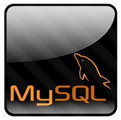

MySQL

MySQL is a popular open-source relational database management system (RDBMS) that is widely used in web development.
It was developed by MySQL AB, which is now owned by Oracle Corporation.
Here are some of the key features of MySQL:
1. Relational database management: MySQL is a relational database management system, which means it stores data in tables with relationships between them.
2. Open-source: MySQL is an open-source software, which means it is free to use and can be modified and distributed by anyone.
3. Cross-platform compatibility: MySQL can run on a variety of operating systems, including Linux, Windows, and macOS.
4. Scalability: MySQL can handle large amounts of data and is scalable, which means it can grow with your business needs.
5. High performance: MySQL is known for its fast performance and high throughput.
6. ACID-compliant: MySQL is ACID (Atomicity, Consistency, Isolation, and Durability) compliant, which means it ensures data consistency and integrity.
7. Easy to use: MySQL is easy to install, configure, and use, making it a popular choice for beginners and experienced developers alike.
8. Security: MySQL provides several security features, such as user authentication, encryption, and access control, to protect your data.
9. Stored procedures and triggers: MySQL supports stored procedures and triggers, which can automate database operations and enhance its functionality.
10. Support for multiple programming languages: MySQL can be integrated with various programming languages, including PHP, Python, and Java,
making it versatile and flexible.